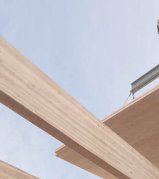
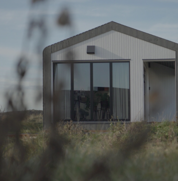

Duurzame materialen
Alle EcoCabins hebben een hoge isolatiewaarde,
worden geproduceerd met indien mogelijk duurzame
en/of natuurlijke materialen en hebben als
opvallende uiterlijke kenmerk de ‘ronde hoeken’,
mogelijk gemaakt door het specifieke materiaalgebruik.
De voordelen van bouwen met hout zijn legio: hout is licht,
flexibel, isoleert goed en bouwt snel en efficiënt.

